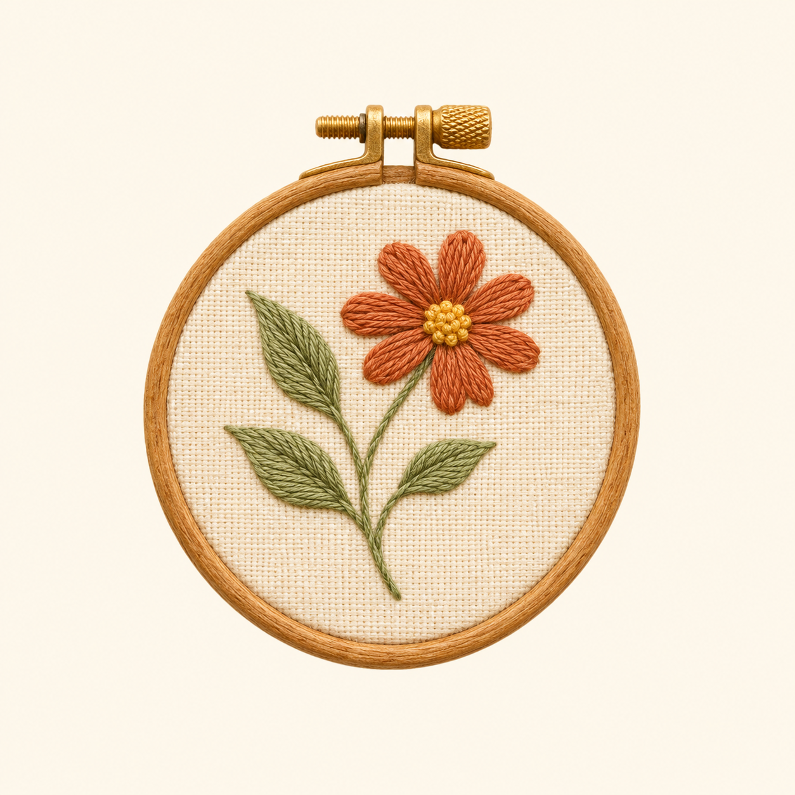

Skip to content
A quiet corner for creative hands.
Make something you love.

The Embroidery Studio
PATTERNS & IDEAS
Menu
☰
Home
The journal
Our story
Start stitching
↗
Please enable JavaScript to browse the embroidery journal.